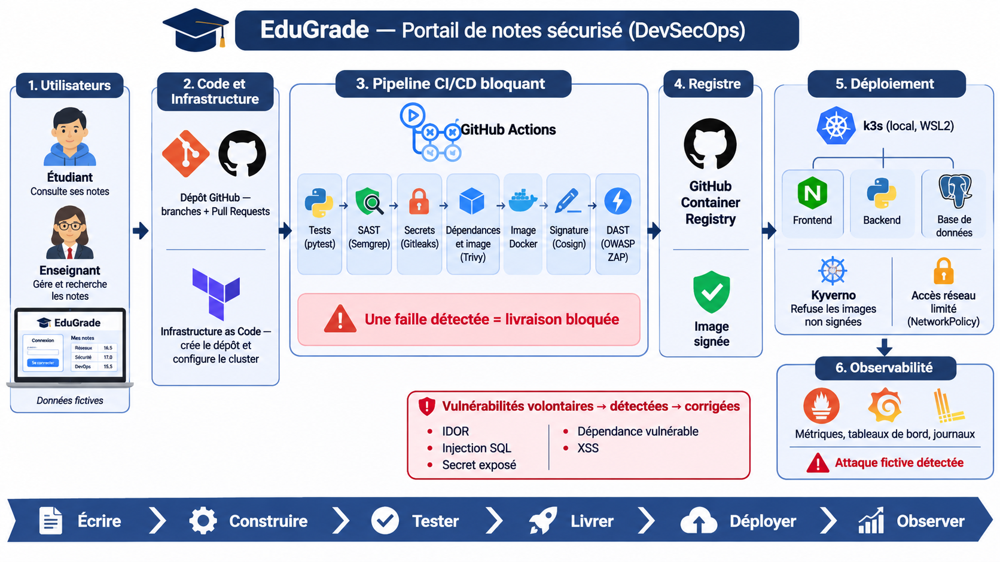
Amir Ghdiri
Arij Cheikhrouhou
Oumaima Ben Othmen
Nasrallah Hadhri
M. Malek Ferchichi
github.com/emirghdiri/
edugrade-devsecops
Novembre 2026 · données fictives
Lecture des preuves. Chaque affirmation du rapport renvoie à une preuve numérotée du dépôt (par exemple preuve 41) : un journal texte contenant la commande exacte, sa sortie complète et son code de retour (docs/preuves/…/logs/) et sa capture (…/captures/). Les preuves 00 à 34 relèvent de la Partie 1 (docs/preuves/), les preuves 40 à 105 de la Partie 2 (docs/preuves/corrvulnecicd/). Aucune valeur de secret n'y figure.
Le module DevSecOps demande de démontrer qu'une chaîne de livraison logicielle peut empêcher une faille connue d'atteindre la production, puis détecter une attaque contre ce qui est déployé. Pour le prouver de manière vérifiable, nous avons construit EduGrade, un portail de gestion de notes universitaires, volontairement vulnérable dans sa première version (tag v0.1-vulnerable). Chaque faille a ensuite été détectée par un outil automatique, bloquée par le pipeline, corrigée dans une branche dédiée et vérifiée de nouveau, preuves à l'appui.
Le projet couvre l'application Flask et sa base PostgreSQL, leur conteneurisation, le pipeline GitHub Actions, le registre GitHub Container Registry (GHCR), un cluster k3s local sous WSL2 et la pile d'observabilité Prometheus / Grafana / Loki. Toutes les données (identités, notes, secrets) sont fictives ; aucun système réel n'a été visé. Le dépôt est public afin de bénéficier gratuitement de la protection de branche ; ce choix est documenté comme risque accepté (section 10).
| Rôle | Fonctionnalités |
|---|---|
| Administrateur | Gestion des comptes enseignants et étudiants (création avec mot de passe haché, modification, suppression avec confirmation). |
| Enseignant | Gestion des notes et des matières, recherche des étudiants, statistiques de la promotion. |
| Étudiant | Lecture seule : tableau de bord (moyenne, mention, meilleure note) et consultation de ses notes. |
Sécurité applicative de base : rôles contrôlés côté serveur, mots de passe hachés avec scrypt, jeton anti-CSRF sur tous les formulaires, cookie de session HttpOnly et SameSite, interface sans JavaScript ni ressource externe (compatible avec une politique CSP stricte). L'application écrit une ligne JSON par événement (login_failed, access_denied, suspicious_input, grade_updated…) sans jamais y placer de mot de passe ni de valeur de note.
| Couche | Technologies |
|---|---|
| Application | Python 3.12, Flask 3.1, Jinja2, psycopg 3, Gunicorn ; PostgreSQL 16 |
| Conteneurs | Dockerfile multi-étapes, utilisateur UID 10001, système de fichiers en lecture seule ; Nginx non-root en reverse proxy |
| Infrastructure as Code | Terraform 1.17 (providers github, kubernetes, helm, random) |
| CI/CD et sécurité | GitHub Actions, pytest, Semgrep 1.185, Bandit 1.9, Gitleaks 8.30, Trivy 0.76, Checkov, Syft, Cosign, OWASP ZAP |
| Orchestration | k3s 1.37 (WSL2, Ubuntu 26.04), Traefik, Kyverno 1.20, Pod Security Admission |
| Observabilité | kube-prometheus-stack (Prometheus, Alertmanager, Grafana 13), Loki 3.6, Grafana Alloy |
Flux applicatif : navigateur → Traefik (Ingress) → frontend Nginx :8080 → backend Flask :8000 → PostgreSQL :5432. Seul le backend joint la base, et seul Traefik joint le frontend : c'est ce que garantissent les NetworkPolicies (section 8).
main : version livrée, protégée — Pull Request obligatoire, une approbation par un autre membre, contrôle CI build-test vert et à jour, ni force push ni suppression.develop : intégration ; toutes les branches en partent et y reviennent par Pull Request.feature/* pour les évolutions, fix/* pour les corrections (une faille = une branche = une PR).v0.1-vulnerable (avant correction), v1.0-secure (version finale).Au total, 23 Pull Requests ont été ouvertes et relues ; depuis l'introduction du pipeline (PR #9), chacune déclenche les neuf contrôles. La répartition détaillée du travail entre les membres figure dans les fiches de contribution individuelles.
Le dépôt lui-même n'a pas été configuré à la main : terraform/github/ déclare le dépôt, les branches main et develop, la protection de main, la collaboratrice (droit push, sans administration), les alertes Dependabot et les GitHub Secrets APP_SECRET_KEY et POSTGRES_PASSWORD utilisés par la CI. Les valeurs de ces secrets ne sont présentes que dans un fichier terraform.tfvars non versionné.
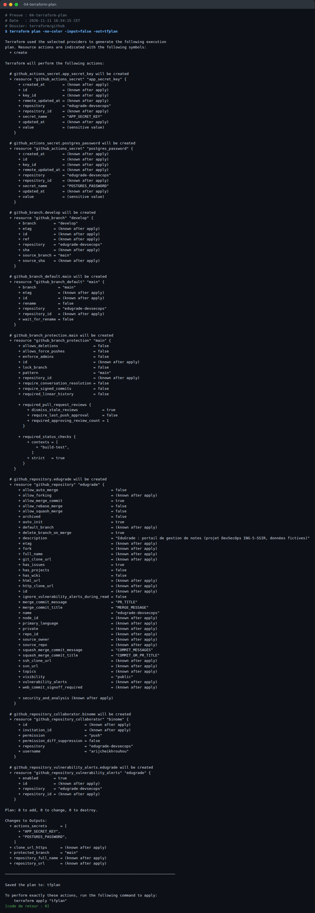
terraform plan du dépôt GitHub : 8 ressources, secrets affichés (sensitive value) (preuve 04).terraform/cluster/ crée 20 ressources : les namespaces edugrade (Pod Security Admission restricted) et monitoring ; les Secrets Kubernetes de l'application et de Grafana, générés aléatoirement par Terraform (jamais écrits dans git) ; cinq NetworkPolicies ; et, par Helm, Kyverno, kube-prometheus-stack, Loki et Alloy, avec des versions de charts épinglées. Les charts sont téléchargés une fois par scripts/fetch_charts.sh, ce qui rend plan et apply indépendants de la disponibilité des dépôts Helm.
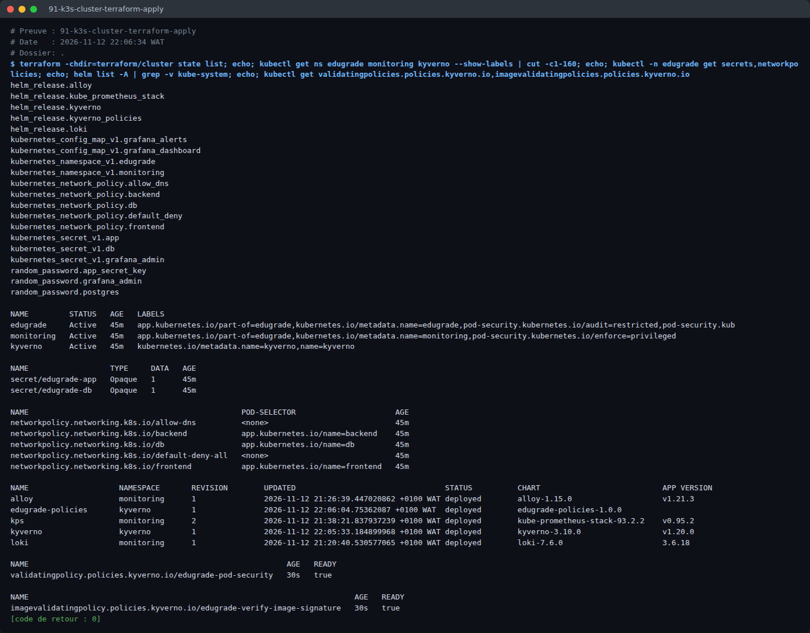
Sept failles ont été introduites, chacune signalée dans le code par un commentaire VULN-… et documentée dans docs/VULNERABILITES.md :
| ID | Faille | Emplacement | OWASP 2021 | Impact démontré |
|---|---|---|---|---|
| V1 | IDOR sur les notes | app/student.py | A01 | Un étudiant lit les notes et l'e-mail de n'importe quel autre étudiant (HTTP 200). |
| V2 | Injection SQL | app/teacher.py | A03 | UNION : les 8 hachages de mots de passe sont exfiltrés. |
| V3 | Secrets en dur | app/config.py | A07 | Avec la clé lue dans le dépôt public, un cookie enseignant forgé ouvre l'espace enseignant sans mot de passe. |
| V4 | PyYAML 5.3.1 | requirements.txt | A06 | CVE-2020-14343 (CRITICAL) : exécution de code par un YAML malveillant. |
| V5 | NetworkPolicy permissive | terraform/cluster/network.tf | A05 | Le backend peut sortir vers tout Internet : exfiltration possible. |
| B1 | En-têtes HTTP absents | docker/nginx.conf | A05 | Ni CSP, ni anti-clickjacking, ni nosniff. |
| B2 | XSS réfléchi | students.html | A03 | Script exécuté dans la session d'un enseignant (filtre |safe). |
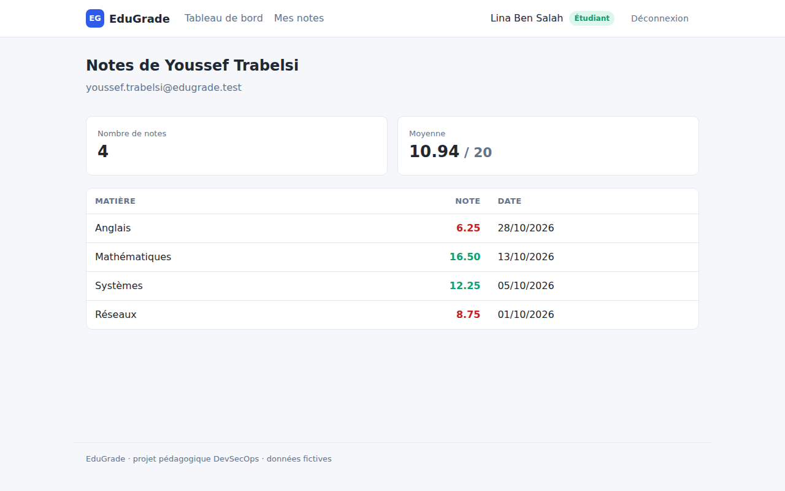
/grades/4 affiche les notes de Youssef (preuve 26).UNION affiche les hachages scrypt (preuve 28).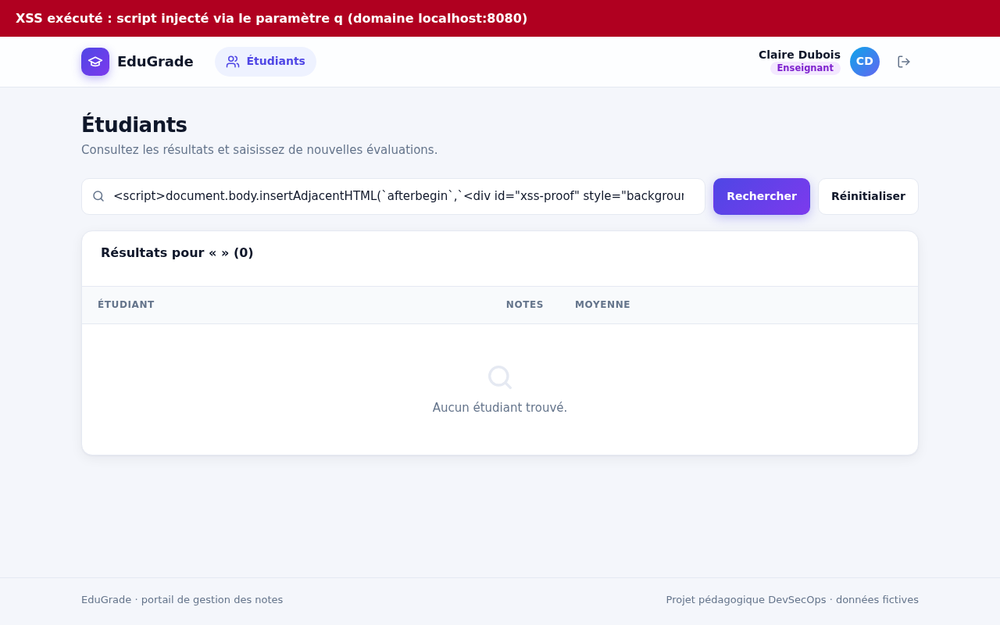
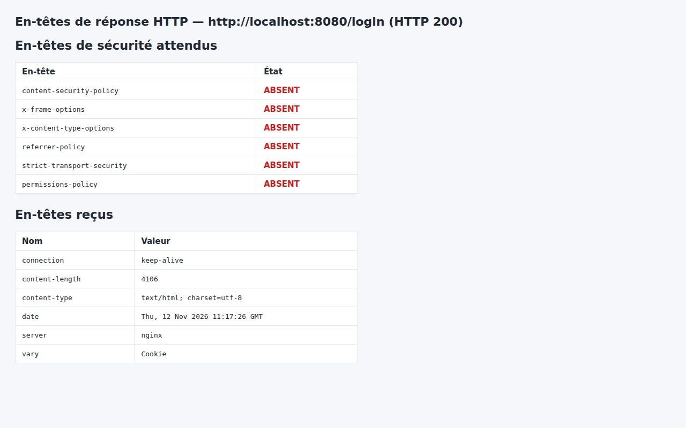
Le pipeline .github/workflows/ci.yml s'exécute sur chaque Pull Request et chaque push vers develop et main. Il suit l'ordre exigé par le cahier des charges : build, tests, SAST, secrets, dépendances, IaC, image, SBOM, publication, signature, Docker Compose de test, DAST.
| Job | Outils | Bloque si… |
|---|---|---|
build-test | pip, pytest + PostgreSQL de service | un test fonctionnel échoue (contrôle exigé par la protection de main) |
security-tests | pytest -m security | un test d'IDOR, d'injection SQL ou de XSS échoue |
sast | Semgrep (p/default + p/security-audit), Bandit | constat Semgrep ERROR ; Bandit HIGH |
secrets | Gitleaks sur tout l'historique | une fuite, hors exceptions ciblées |
dependencies | Trivy fs | HIGH/CRITICAL avec correctif disponible |
iac | Trivy config (+ Checkov en rapport) | HIGH/CRITICAL hors exceptions datées |
image | docker build, Syft (SBOM SPDX), Trivy image | HIGH/CRITICAL avec correctif dans l'image |
publish | GHCR (tag = SHA), Cosign keyless (OIDC) | ne s'exécute que si tout est vert, et jamais sur une PR |
dast | Docker Compose + OWASP ZAP authentifié | au moins une alerte High |
--ignore-unfixed pour Trivy : les vulnérabilités Debian sans correctif restent visibles dans la SBOM mais n'exigent aucune action possible.scripts/zap_scan.sh se connecte en enseignant (jeton CSRF lu dans la page), afin de tester les pages réellement exposées aux failles..trivyignore.yaml et .gitleaksignore, limitées à un fichier ou à une empreinte, justifiées et datées dans docs/POLITIQUE_BLOCAGE.md.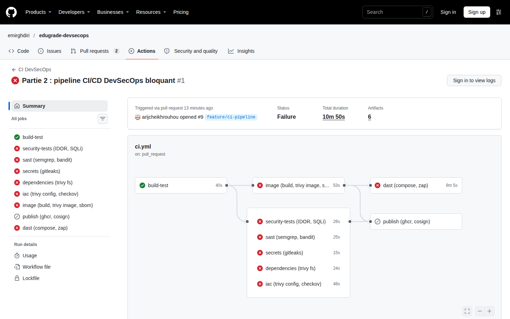
build-test vert, 7 contrôles rouges, publish sauté — aucune image vulnérable n'est publiée (preuve 40).| Job | Résultat du premier run | Preuve |
|---|---|---|
| security-tests | 4 échecs : notes de Youssef accessibles, aucun access_denied ; 6 étudiants renvoyés par une tautologie ; hachages divulgués | 41 |
| sast | Semgrep sqlalchemy-execute-raw-query (ERROR, V2) et template-unescaped-with-safe (B2) | 42 |
| secrets | Gitleaks : 2 × generic-api-key dans app/config.py, commit f78fd00 (V3) | 43 |
| dependencies | Trivy fs : PyYAML 5.3.1, CVE-2020-14343 CRITICAL (V4) | 44 |
| image | V4 dans l'image + zlib CVE-2026-76844 / CVE-2026-85091 (HIGH) dans l'image de base Debian — trouvaille hors failles volontaires | 45 |
| iac | GIT-0001 (dépôt public, CRITICAL), GIT-0004 (commits non signés, HIGH) | 46 |
| dast | ZAP : 3 alertes High (SQL Injection, XSS réfléchi, XSS DOM) + en-têtes absents (Medium/Low) | 47 |
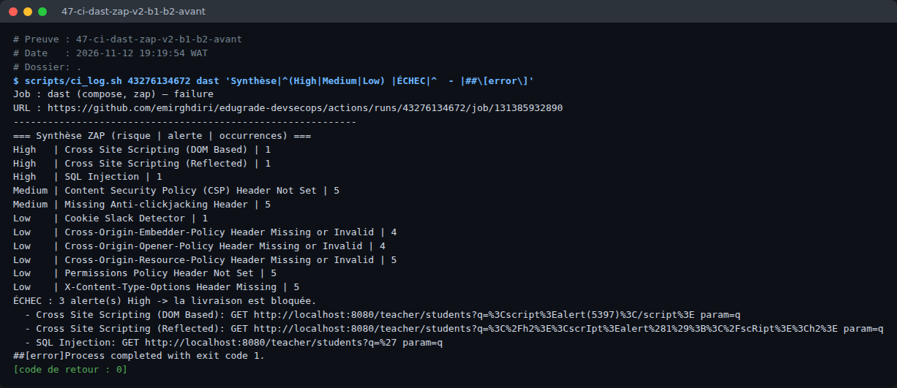
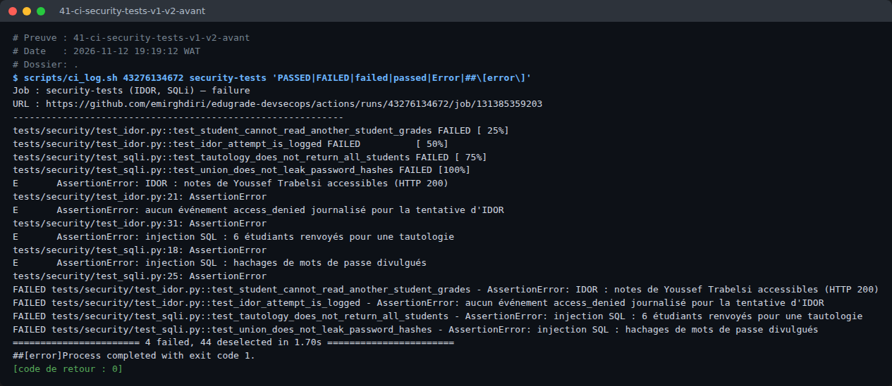
Erreur du pipeline lui-même (preuves 48 → 51 → 52). Bandit faisait échouer le job alors qu'aucun constat n'était HIGH, et surtout il affichait en clair les secrets V3 dans le journal public de GitHub Actions. Correction : format de sortie sans message ni extrait de code, blocage sur HIGH uniquement. Un outil de sécurité mal configuré peut lui-même devenir une source de fuite.
Chaque faille a été corrigée dans sa propre branche fix/* et sa propre Pull Request ; le pipeline de la PR montre l'erreur disparue. Les preuves suivent toujours le même triptyque erreur → correction → après.
| Faille | Correction | Vérification | Preuves |
|---|---|---|---|
| V1 · PR #10 | Contrôle d'appartenance côté serveur : un étudiant qui demande les notes d'un autre reçoit 403 et l'événement access_denied est journalisé ; enseignants et administrateur conservent l'accès. | 2 tests IDOR PASSED | 41 → 60 → 61 |
| V2 · PR #11 | Requête paramétrée ILIKE %s + paramètre lié, jokers LIKE échappés. | tests SQLi PASSED, sast vert, plus d'alerte ZAP | 41-42 → 62 → 63 |
| B2 · PR #12 | Suppression de |safe (échappement Jinja) + test de non-régression test_xss.py. | plus aucune alerte ZAP XSS | 47 → 64 → 65 |
| B1 · PR #13 | Nginx : CSP stricte (script-src 'none', frame-ancestors 'none'), X-Frame-Options, nosniff, Referrer-Policy, Permissions-Policy, COOP/CORP/COEP. Vérifié sans violation CSP dans Chromium. | plus d'alerte ZAP d'en-tête | 47 → 66 → 67 |
| V3 · PR #14 | Secrets lus uniquement dans l'environnement ; refus de démarrer sans SECRET_KEY ; rotation ; exception Gitleaks limitée aux deux empreintes historiques. | no leaks found ; cookie forgé avec l'ancienne clé → 302 /login | 43 → 68 → 69, 70 |
| V4 · PR #15 | PyYAML 6.0.3 + yaml.safe_load (un YAML !!python/object/apply est refusé). | dependencies vert | 44 → 71 → 72 |
| zlib · PR #16 | apt-get upgrade dans l'image d'exécution, cache apt supprimé, image toujours non-root. | plus de HIGH zlib | 45 → 73 → 74 |
| IaC · PR #17 | Dépôt public et commits non signés : choix documentés, exceptions .trivyignore.yaml limitées à main.tf et expirant le 30/06/2027. | iac vert ; un nouveau dépôt public ailleurs reste bloqué | 46 → 75 → 76 |
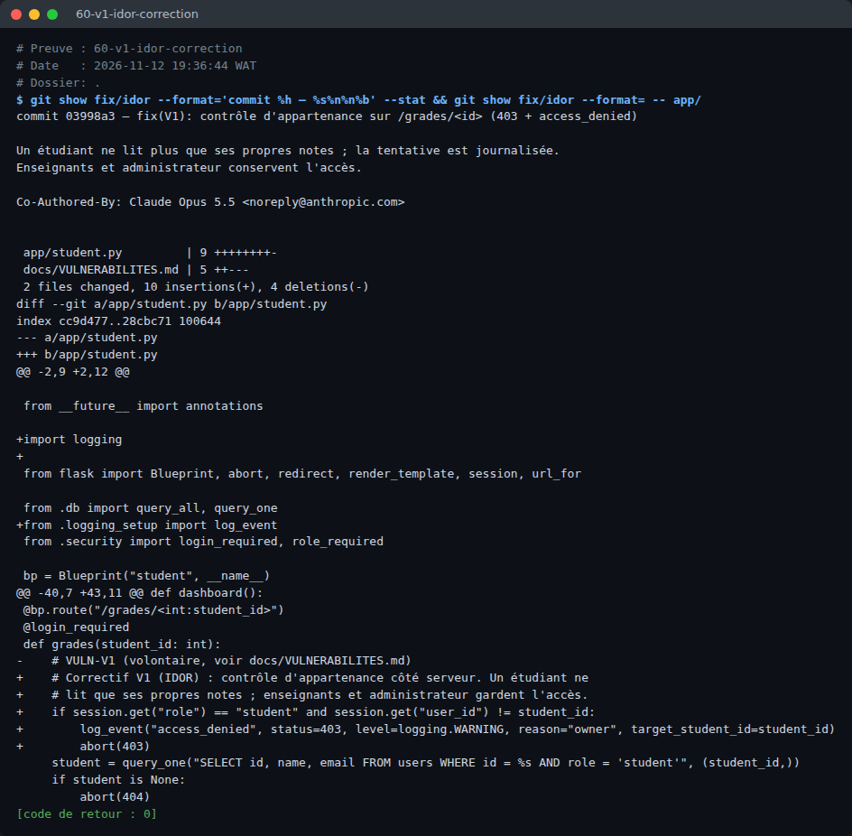
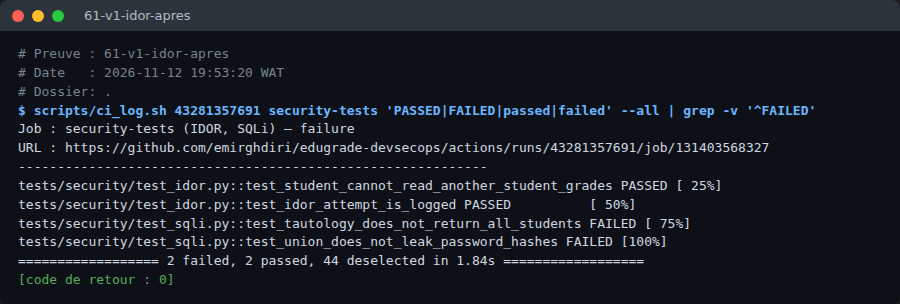
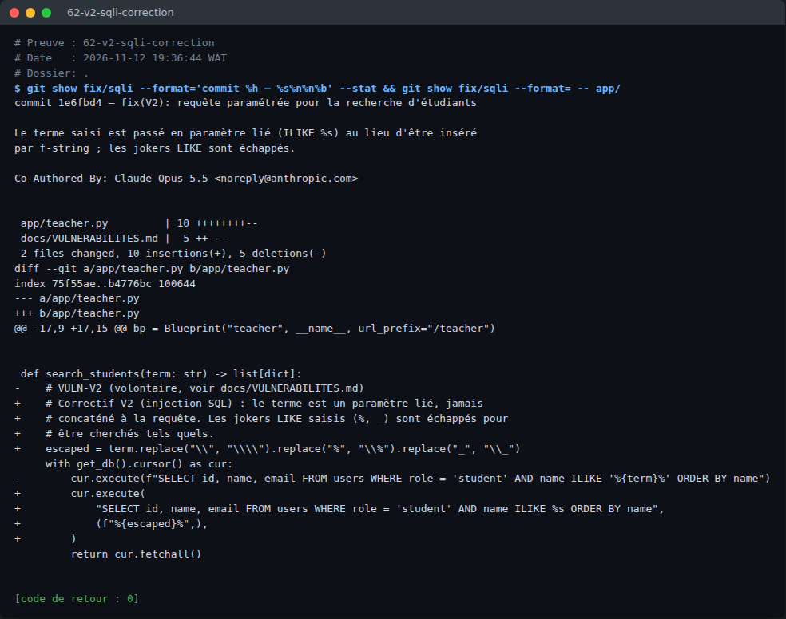
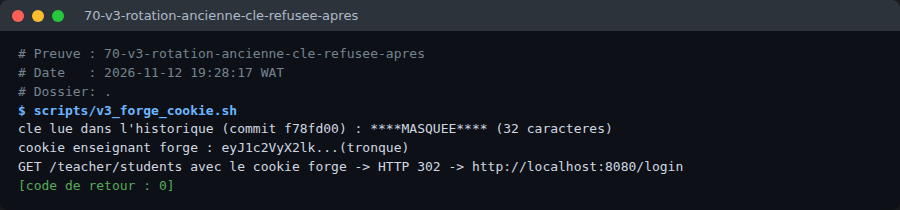
Après fusion des huit corrections dans develop, les neuf jobs sont verts, l'image est publiée et signée, et ZAP ne remonte plus aucune alerte High (une seule alerte Low, informative).
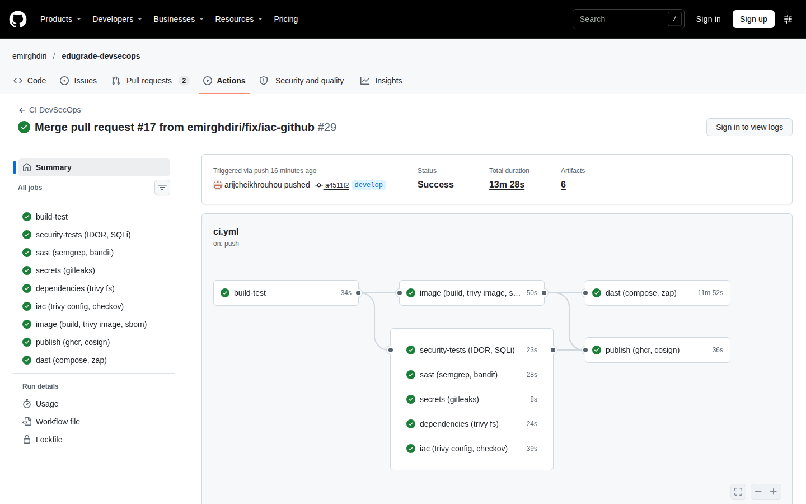
develop après fusion des corrections : 9 jobs sur 9 verts, publication et signature exécutées (preuves 85-86).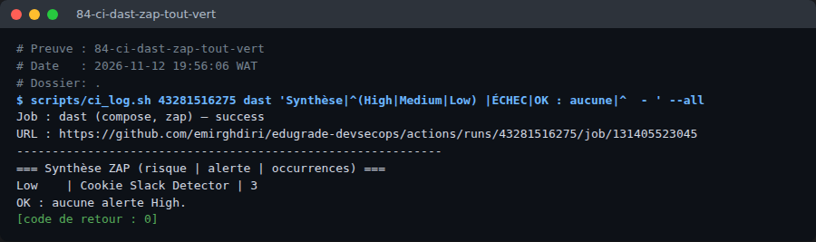
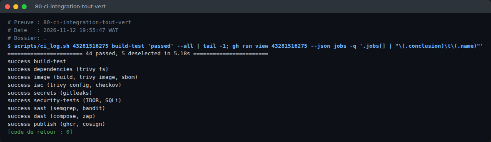
Bilan. Avant : 7 contrôles rouges, publication bloquée. Après : 9 contrôles verts, image publiée, signée et vérifiable. Chaque transition est tracée par une Pull Request relue et un run de pipeline consultable sur GitHub.
Le job publish ne s'exécute que sur develop ou main, et seulement si les sept contrôles précédents sont verts. Il :
…/ci.yml@refs/heads/develop) et la signature est inscrite dans le journal de transparence public Rekor ;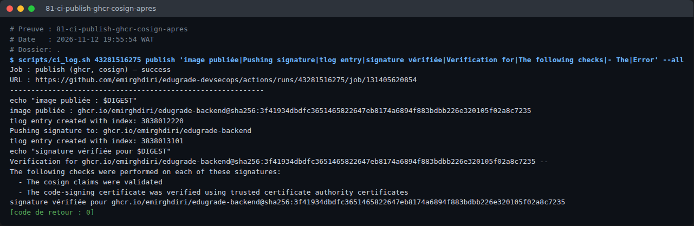
Aucune clé privée n'est à protéger : l'identité de signature est celle du pipeline lui-même. C'est cette identité que Kyverno exige à l'admission dans le cluster (section 8) : une image construite à la main, ou signée depuis une autre branche, est refusée. La SBOM (101 paquets pour l'image finale, preuve 83) permet de savoir en quelques secondes si une nouvelle CVE concerne l'image déployée.
| Couche | Mesure |
|---|---|
| Pod Security Admission | Namespace edugrade en restricted : non-root, pas d'escalade, capacités retirées, seccomp obligatoire. |
Manifestes (k8s/) | UID fixes (10001, 101, 70), readOnlyRootFilesystem, drop: [ALL], seccomp RuntimeDefault, pas de jeton de compte de service, limites mémoire, sondes de santé, image backend désignée par digest. |
| Kyverno 1.20 (CEL) | ImageValidatingPolicy : signature Cosign du pipeline exigée (develop/main, Rekor). ValidatingPolicy : registres autorisés, tag obligatoire, latest interdit, non-root, pas de privileged. |
| NetworkPolicies | default-deny en entrée et en sortie, puis uniquement : DNS, Traefik → frontend:8080, frontend → backend:8000, backend → db:5432. |
La NetworkPolicy backend contenait volontairement un bloc egress vers 0.0.0.0/0, « pour les mises à jour ». Un backend compromis (V2, V3) aurait pu exfiltrer la base. Le job iac l'a détecté (Trivy, règle KUBE-0002, HIGH) : sur la PR d'introduction du cluster, seul ce contrôle était rouge (preuve 93). Le test de segmentation exécuté sur le cluster réel l'a confirmé : backend → 1.1.1.1:443 autorisé (preuve 94).
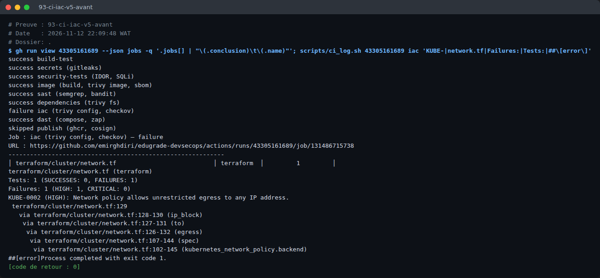
network.tf:129 (preuve 93).Correction (PR #20) : suppression du bloc permissif ; les mises à jour passent par une nouvelle image signée, jamais par le pod. Après terraform apply, le test complet est conforme.
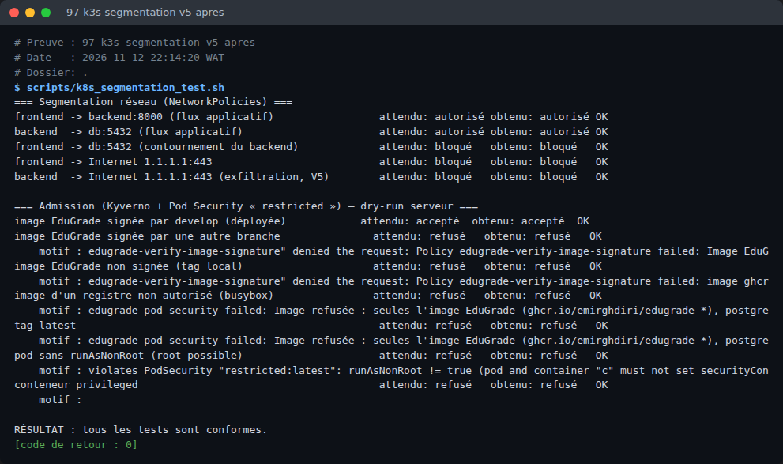
latest, root et privileged refusés (preuve 97).Les journaux JSON du backend sont collectés par Grafana Alloy via l'API Kubernetes (sans accès à l'hôte), enrichis des labels event et level, puis stockés dans Loki. Grafana exploite ces données dans le tableau de bord « Sécurité EduGrade » et dans trois règles d'alerte, toutes provisionnées par Terraform :
| Alerte | Condition (5 minutes) | Gravité |
|---|---|---|
| Force brute sur la connexion | plus de 5 login_failed | critique |
| Tentative d'injection (SQLi / XSS) | au moins un suspicious_input | critique |
| Accès non autorisé (IDOR) | plus de 3 access_denied | avertissement |
scripts/attack_scenario.sh enchaîne, contre l'application déployée : 12 essais de mots de passe, une connexion réussie, quatre injections SQL/XSS et l'énumération des notes de six étudiants. Toutes les attaques échouent (401, aucune ligne ni hachage renvoyé, 403) et toutes sont détectées.
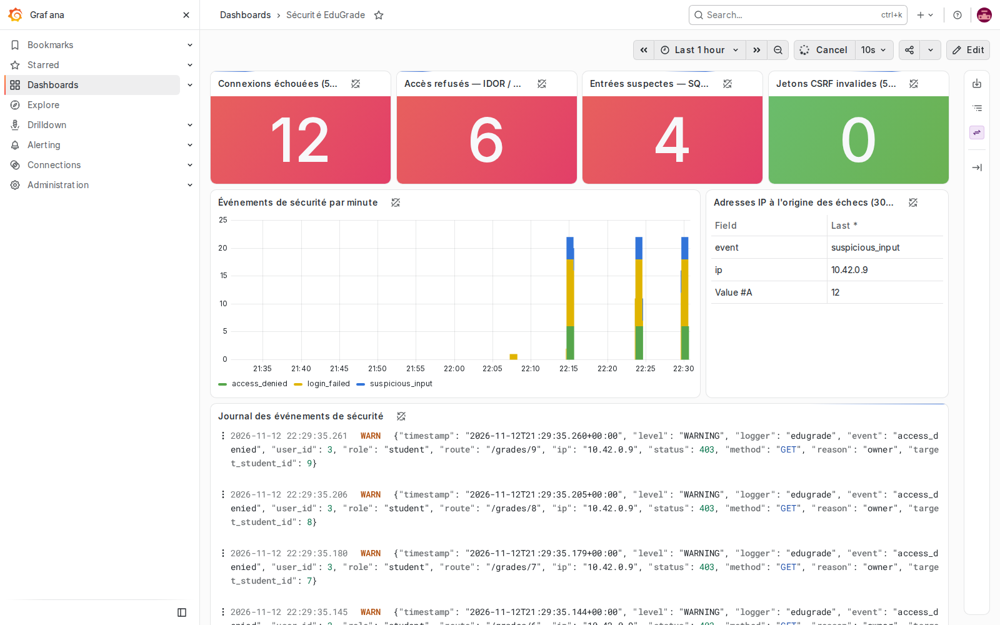
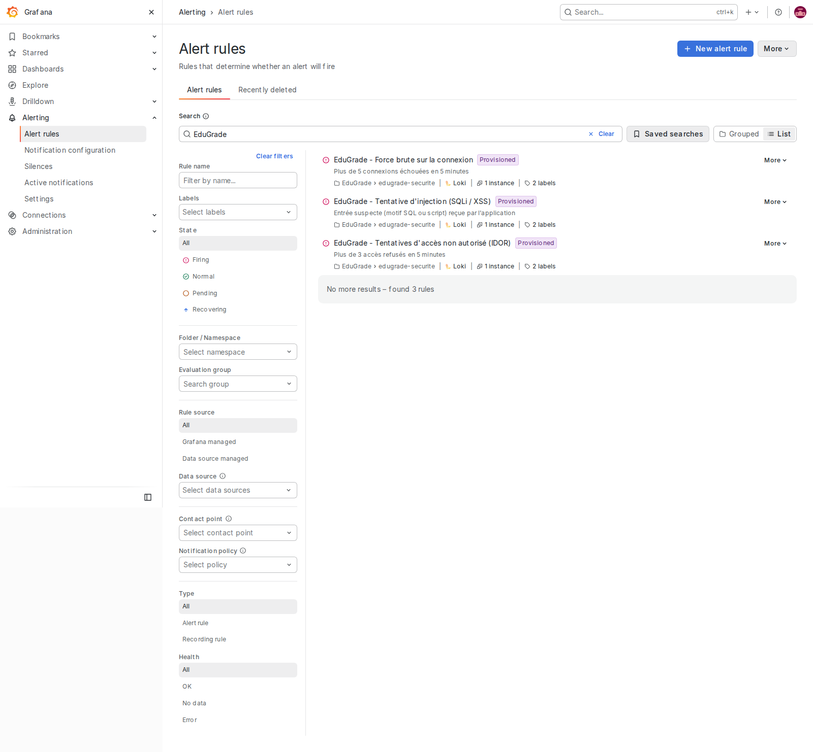
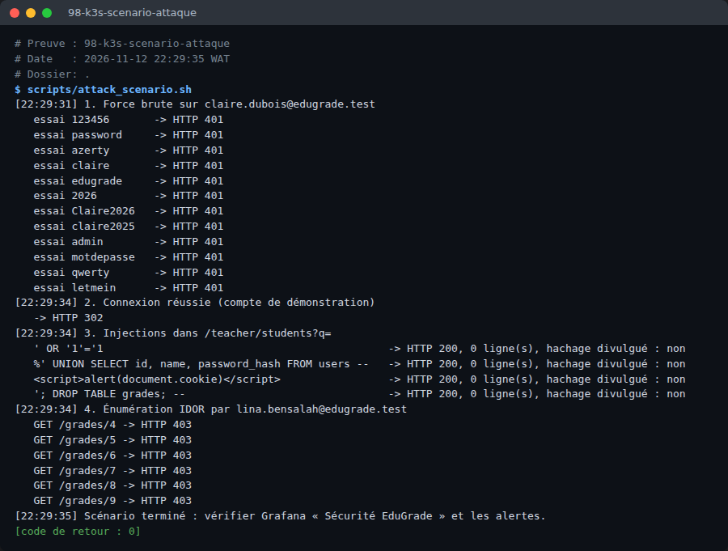
Le modèle complet (docs/STRIDE.md) identifie les actifs (notes, comptes et hachages, SECRET_KEY, mot de passe de la base, image, journaux) et cinq frontières de confiance : Internet → cluster, proxy → application, application → base, code → pipeline, registre → cluster. Synthèse :
| Catégorie | Menace principale | Mesures en place |
|---|---|---|
| Spoofing | Cookie de session forgé (V3) ; force brute ; image usurpant celle du pipeline | Secrets hors code + rotation ; scrypt + alerte ; Cosign keyless vérifié par Kyverno |
| Tampering | Injection SQL (V2) ; XSS (B2) ; YAML malveillant (V4) ; image modifiée | Requêtes paramétrées, échappement, CSP, safe_load ; image par digest signée ; main protégée |
| Repudiation | Nier une action ou une tentative | Journaux JSON (utilisateur, rôle, route, IP, statut) centralisés dans Loki ; historique des PR ; Rekor |
| Information disclosure | IDOR (V1) ; exfiltration (V5) ; secrets dans les journaux CI | Contrôle d'appartenance ; default-deny ; sorties d'outils masquées |
| Denial of service | Épuisement de ressources ; indisponibilité non vue | Limites mémoire, taille de requête, délais ; sondes ; Prometheus/Alertmanager |
| Elevation of privilege | Étudiant → enseignant ; évasion de conteneur ; pod privilégié | Rôles côté serveur ; non-root, lecture seule, drop: [ALL] ; PSA + Kyverno |
| Risque | Décision et justification |
|---|---|
| Dépôt public (GIT-0001) | Accepté jusqu'au 30/06/2027 : protection de branche gratuite, données fictives. |
| Commits non signés (GIT-0004) | Accepté jusqu'au 30/06/2027 : compensé par PR, approbation et CI obligatoires. |
| Anciennes valeurs V3 dans l'historique | Valeurs révoquées (rotation prouvée) ; main interdit la réécriture de l'historique. |
Pas de limitation de débit sur /login | À traiter (middleware Traefik rateLimit) ; atténué par l'alerte et le blocage d'IP. |
Plusieurs problèmes réels sont apparus pendant la mise en œuvre. Nous les avons traités comme des constats de sécurité à part entière : chacun est documenté et prouvé.
| Constat | Cause et résolution | Preuves |
|---|---|---|
| Secrets affichés par Bandit dans un journal public | Format texte par défaut citant la valeur des mots de passe en dur ; sortie personnalisée sans valeur. | 48, 51, 52 |
| Règles Kyverno ignorées | Kyverno 1.20 n'exécute plus les ClusterPolicy kyverno.io/v1 ; migration vers ValidatingPolicy / ImageValidatingPolicy (CEL). Sans test d'admission, l'absence de protection serait passée inaperçue. | 91, 97 |
| NetworkPolicies non appliquées | iptables-nft 1.8.11 d'Ubuntu 26.04 incompatible avec le contrôleur de NetworkPolicies de k3s (« Aborting sync ») : le frontend joignait la base. Une première correction (binaires iptables embarqués) cassait les Services après redémarrage ; solution définitive : iptables-legacy pour tout le système. | 92, 95, 105 |
| Limite d'un outil d'analyse | La règle Trivy KUBE-0002 n'examine que le premier bloc egress : placé en second, le même défaut passe inaperçu. Compensé par le test de segmentation sur le cluster réel. | 93, 97 |
| IP de l'attaquant introuvable | Dans k3s, l'IP journalisée était celle de Traefik (deux proxys, un seul de confiance) : paramètre TRUSTED_PROXY_COUNT (2 en k3s), testé contre l'en-tête forgé. Sur le poste de démonstration, le répartiteur ServiceLB masque encore l'IP externe ; un répartiteur qui la conserve (MetalLB, cloud) la transmet. | 102-104 |
| Image de base vulnérable | zlib vulnérable dans python:3.12-slim alors qu'un correctif Debian existait : correctifs appliqués à chaque build. | 45, 73, 74 |
| Environnement contraint | Connexion lente (registres d'images, dépôts Helm) et mémoire WSL limitée : charts en cache local, délais Helm et sondes Grafana adaptés, WSL porté à 10 Go. | 90, 105 |
Enseignement principal. Un contrôle de sécurité qui n'est pas testé n'existe pas : deux de nos protections (Kyverno et les NetworkPolicies) étaient déclarées, installées et « vertes », mais inopérantes. Seuls des tests de comportement (tentatives réelles de connexion et d'admission) l'ont révélé. C'est pourquoi chaque mesure du projet est accompagnée d'un test qui essaie de la contourner.
Le plan (docs/PLAN_REPONSE_INCIDENT.md) suit les phases du NIST SP 800-61 et s'appuie sur les alertes réellement configurées.
| Phase | Actions clés |
|---|---|
| Préparation | Journaux centralisés, tableau de bord, alertes, accès Grafana, inventaire de l'image déployée (digest, SBOM, signature), rôles de l'équipe. |
| Détection et analyse | Qualification en 15 minutes : IP et comptes visés, requêtes LogQL prêtes à l'emploi, connexion réussie après échecs = compte compromis ; classement P1 à P3. |
| Confinement | Blocage d'IP à l'entrée (Traefik) ; invalidation de toutes les sessions par rotation de SECRET_KEY (terraform apply -replace) ; isolement réseau ; retour à la dernière image saine signée ; conservation des preuves. |
| Éradication | Correction dans une branche fix/* soumise à tout le pipeline, test de non-régression reproduisant l'attaque, rotation des secrets exposés. |
| Rétablissement | Publication et signature par le pipeline, mise à jour du digest, déploiement (signature vérifiée par Kyverno), nouvelle exécution des tests de segmentation et du scénario d'attaque. |
| Retour d'expérience | Note sous 5 jours : chronologie, cause racine, actions correctives datées ; mise à jour du plan et de la politique de blocage. |
Le scénario d'attaque de la section 9 a servi d'exercice : détection, identification des comptes et des routes visés, et vérification que les contrôles ont bloqué chaque tentative.
Conformément au cahier des charges, nous déclarons avoir utilisé un assistant d'intelligence artificielle, Claude Code (Anthropic), pendant le projet.
| Usage | Détail |
|---|---|
| Rédaction de code et de configuration | Proposition du workflow CI/CD, des scripts (ZAP, captures, tests de segmentation, scénario d'attaque), du Terraform du cluster, des règles Kyverno et des corrections des failles. |
| Diagnostic | Analyse des journaux d'échec (Kyverno 1.20, iptables, sondes Grafana) et proposition de corrections. |
| Documentation | Aide à la rédaction de la politique de blocage, du modèle STRIDE, du plan de réponse à incident et du présent rapport. |
Contrôle humain. Toutes les propositions ont été relues ; chaque modification est passée par une Pull Request dont la fusion a été décidée par un membre de l'équipe (l'assistant n'avait pas le droit de fusionner). Les résultats présentés ne reposent pas sur les affirmations de l'assistant mais sur les sorties des outils : chaque preuve contient la commande exécutée, sa sortie et son code de retour, et chaque run de pipeline est consultable sur GitHub. Aucune donnée personnelle réelle ni aucun secret réel n'a été fourni à l'assistant.
EduGrade démontre une chaîne DevSecOps complète et vérifiable. Les sept failles volontaires ont toutes été détectées automatiquement, ont bloqué la livraison, puis ont été corrigées et vérifiées. Ce qui est déployé est exactement ce qui a été scanné : une image signée par le pipeline, décrite par une SBOM, refusée par le cluster si elle ne l'est pas. À l'exécution, les conteneurs sont non-root et isolés par des NetworkPolicies. Une attaque fictive a été bloquée, visible en quelques secondes dans Grafana et signalée par trois alertes.
Au-delà des outils, le projet nous a appris que la sécurité se prouve : plusieurs protections installées et apparemment fonctionnelles étaient inopérantes, et seuls des tests qui tentent réellement de les contourner l'ont montré.
/login (middleware Traefik) et verrouillage temporaire de compte.github-actions-mutable-action-tag).| N° | Contenu |
|---|---|
| 00-06 | Prérequis, Terraform du dépôt GitHub (init, fmt, validate, plan, apply), historique git |
| 07-12 | Détections locales de la Partie 1 (Gitleaks, Trivy, Semgrep, Bandit, pytest) |
| 13-18 | Docker Compose, conteneurs non-root, Trivy image, journaux JSON |
| 20-34 | Application et démonstration des failles avant correction |
| 40-49 | Premier run du pipeline sur la version vulnérable |
| 48, 51-52 | Erreur du pipeline (Bandit) et sa correction |
| 60-76 | Correction de chaque faille : diff et run de la PR |
| 80-86 | Pipeline entièrement vert, publication, signature, SBOM, DAST |
| 90-97, 101 | Cluster k3s, NetworkPolicies, V5 avant/après (CI et cluster), tests d'admission |
| 98-100 | Scénario d'attaque, détection dans Loki, alertes et tableau de bord Grafana |
| 102-105 | IP client avant/après, déploiement de la version finale, configuration iptables définitive |
Index détaillé : docs/PREUVES_PARTIE1.md, docs/preuves/INDEX.md et docs/preuves/corrvulnecicd/INDEX.md. Documents de référence : docs/VULNERABILITES.md, docs/POLITIQUE_BLOCAGE.md, docs/STRIDE.md, docs/PLAN_REPONSE_INCIDENT.md.
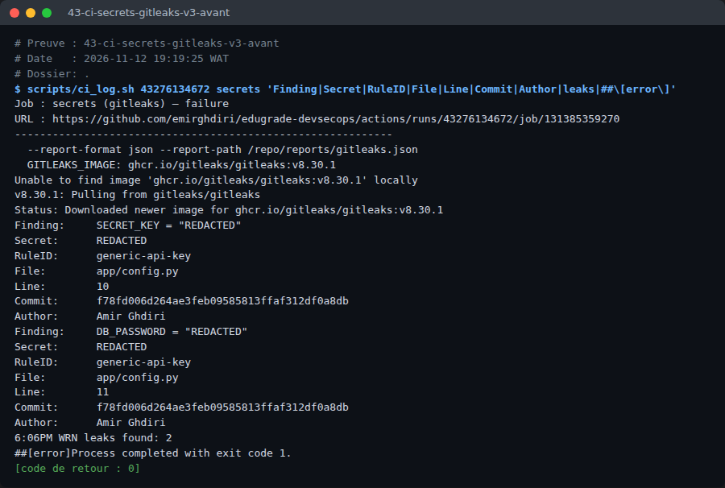
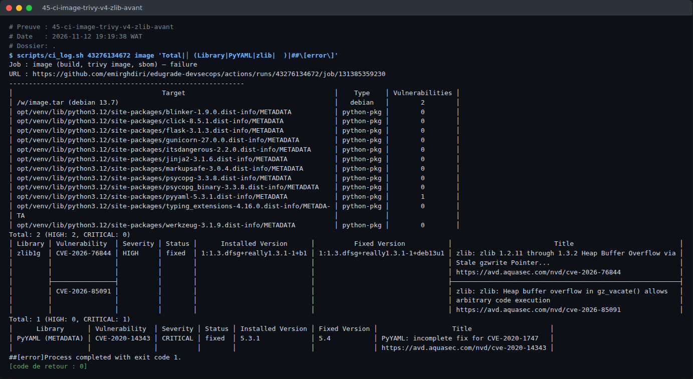
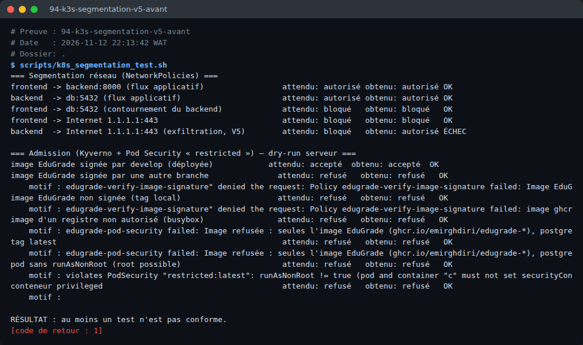
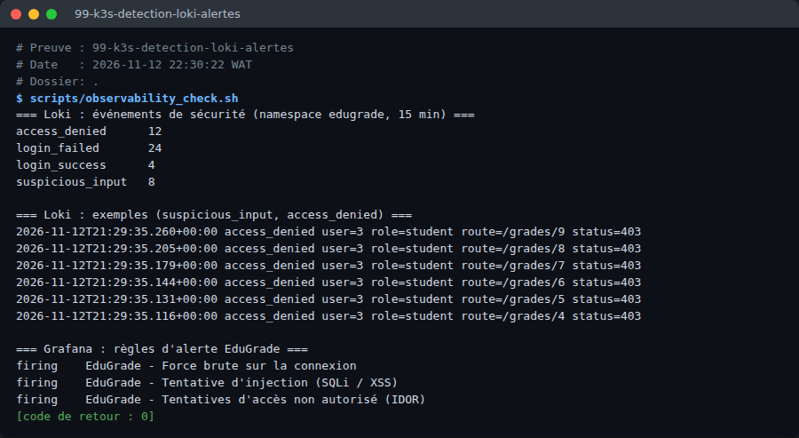
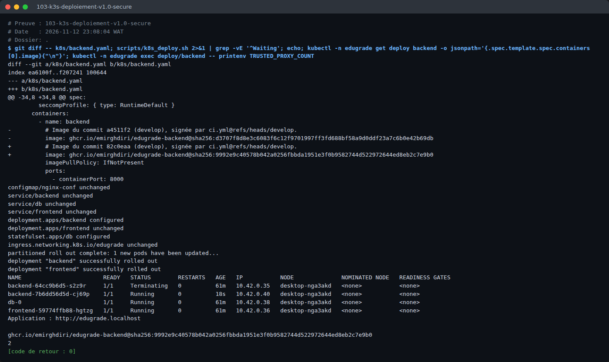